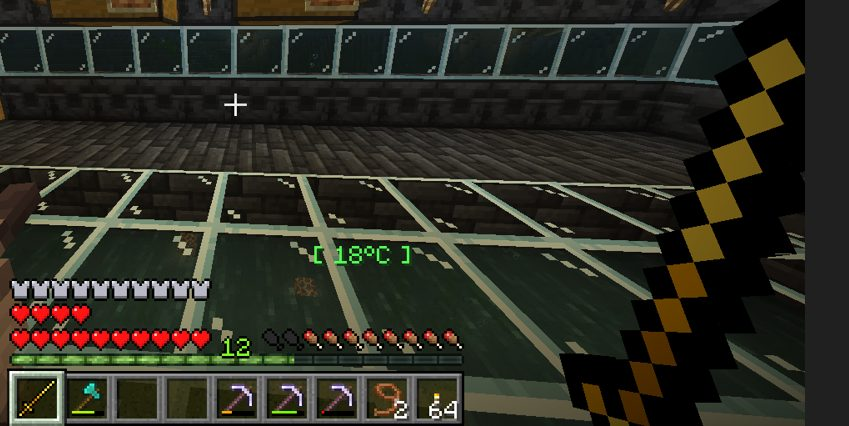
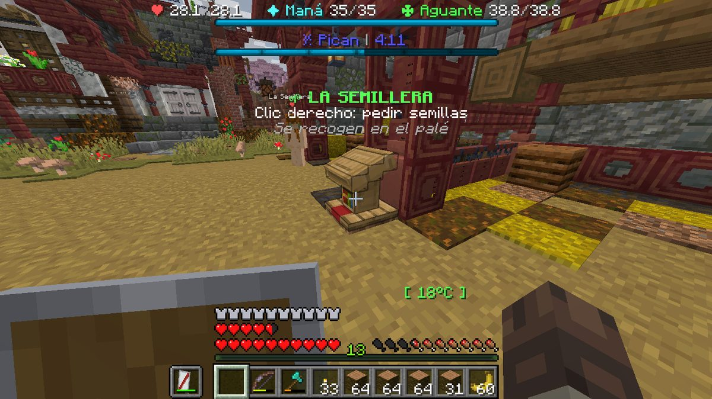

Boletín Oficial del Ayuntamiento del Reino · Se informa, no se alarma
EL HERALDO DEL REINO
Número 199 de septiembre de 2026Tarde del miércoles 9 de septiembre a la mañana del jueves 10
ONCE CONSULTAS AL APARATO DE LAS HUELLAS: DOS RESOLVIERON TRES CASOS Y NUEVE NO ENCONTRARON UN CABALLO
La Encargada del Orden lo encendió dos veces de madrugada y nueve minutos después firmaba la primera resolución de la historia de este Reino. Firmó tres. El condenado confesó, llamó a un abogado, anunció que denunciaría a otro por retenerle once horas dentro de un agujero y acabó dejando el pago y, con estas palabras, «los hornos de todos». Y a los animales que faltan —catorce, de siete casas distintas— este Ayuntamiento les ha abierto por fin expediente común, con el autor inscrito en el archivo bajo la denominación que le corresponde: EL CHUPACULOS DE VACA.
Redactado por la Oficina de Prensa del Ayuntamiento
PORTADA
El aparato de las huellas habló, y por primera vez en este Reino se supo quién fue
Las 05.23. El cuerpo de orden del Reino al completo, dos horas y media después de firmar las tres resoluciones. Obsérvese que ninguno de los dos cobra de esta corporación y que las gorras se las han pagado ellos.
Archivo Municipal · pase el ratón para revelarla
A las 02.45 de la madrugada del jueves, la Encargada del Orden encendió
el aparato de las huellas. Volvió a encenderlo a las 02.48. A las 02.54
publicó la primera resolución escrita de la historia de este pueblo, y en los catorce
minutos siguientes publicó otras dos.
Nueve minutos entre encender el aparato y decir un nombre. Este Ayuntamiento
hace constar, con la incomodidad que corresponde, que lleva diecinueve jornadas
publicando expedientes que no se cierran, y que el primero que se ha cerrado lo ha
cerrado una vecina de madrugada con un cacharro que se paga ella.
Lo primero: los hornos. A las 21.42 del miércoles, Mazitrvrs había
denunciado en el tablón que le habían vaciado la hornera —«me robaron los hornos, la
concha de su madre»— y había pedido «justicia». La Encargada contestó cuatro
palabras: «llegando reviso eso». Y a las 02.54 revisó eso.
La resolución, palabra por palabra: «se ha completado la investigación de robo de
hornos en el caso de Mazi; en base a las evidencias recolectadas se ha concretado que el
ladrón de hornos, tanto esta madrugada como los hornos superiores de hace cinco días,
siendo el único culpable: kum4shiro». Con la resolución iban las lecturas del
aparato, que este Diario reproduce en el pliego de la Comisaría porque son la primera
prueba material que se ha aportado nunca aquí.
Lo segundo: la puerta. A las 03.02, la misma agente resolvió el caso de las
trampas de veneno y los carteles de amenaza que llevan desde el 27 de agosto
apareciendo en su propio domicilio. El aparato le devolvió una lectura de hace tres días
y tres cuartos en la que se pone un cartel de abedul a la puerta de su casa. La
Comisaría atribuyó el hecho al mismo vecino.
Y lo tercero: el burro. A las 03.08 se cerró el caso que este Diario no había
publicado todavía y que es, con diferencia, el más feo de los tres: hace unos días
apareció el burro de _Cafecito_ colgado de su propia casa, con carteles amenazando
a la propietaria. El aparato devolvió el cartel entero y quién lo puso. El cartel no pedía
rescate ni pedía dinero. Acusaba: decía «devolvé lo que robaste».
La tarifa. Las tres resoluciones acaban igual: el responsable debe 50
cacahuates o 10 diamantes, y no en concepto de multa, sino —y esto es literal— «para
pagar su propia investigación». Esta Oficina ha comprobado la cifra y confirma que es
exacta: cincuenta cacahuates es justo lo que cuesta encender el aparato la primera vez
de la jornada. Es decir que en este Reino, desde anoche, al culpable se le pasa la
factura de la luz.
Y las tres acaban además con la misma frase, que resume el estado de esta
administración mejor que nada de lo que escriba esta Oficina: «por el momento no lo
podemos meter a la cárcel ya que no se cuenta con una». La cárcel se inauguró el 26 de
agosto. Lleva quince jornadas vacía y ya tiene su primer inquilino imposible.
PORTADA
Nueve consultas más al mismo aparato, y las nueve eran para buscar un caballo
Las 06.11. La ley del Reino, de cerca. Un vecino comentó al verla: «con esos ojos hasta ganas dan de obedecer a la ley». Es el único apoyo institucional que ha recibido el cuerpo desde que existe.
Archivo Municipal · pase el ratón para revelarla
El aparato de las huellas se consultó once veces en toda la jornada. Dos de esas
once son las que resolvieron los tres casos. Las otras nueve son de una sola persona,
ocurrieron seis horas antes y no encontraron nada.
Entre las 18.47 y las 18.53 del miércoles, Jooan786 —que es el
Ayudante del Orden, o sea la otra mitad del cuerpo— hizo nueve consultas seguidas.
A las 19.00, siete minutos después de la última, escribió en la plaza la pregunta
que llevaba dentro: «¿alguien ha visto mi caballo?».
No le contestó nadie. A las 19.05 volvió a escribir: «¿les comieron la lengua
o qué?». Tampoco. En la plaza había cinco vecinos.
Esta Oficina hace constar lo siguiente, y le parece lo más importante del número: la
autoridad de este Reino se pasó seis minutos investigando la desaparición de su propio
caballo con la herramienta oficial, no sacó nada, preguntó en voz alta y no le contestó
nadie. Nueve horas más tarde, esa misma herramienta cerraba tres expedientes ajenos.
No hay ninguna conclusión que sacar de esto. Se publica porque pasó en ese orden.
PORTADA
El censo de lo que falta: a siete casas del Reino les falta un animal, y no hay un solo expediente por ello
Aprovechando que por fin hay una herramienta que sirve, esta Oficina ha hecho lo único
que sabe hacer, que es contar. Y lo que sale de contar es que en este Reino no le
han robado animales a una vecina: se los han robado a todo el mundo, en distintos
puntos, con distintos métodos y a lo largo de veinte días.
Lo que consta, por casas y por orden de entrada en el archivo:
Uno. El 25 de agosto, LetayReaver denunció que le habían entrado y se
habían llevado carbón, hornos, madera, cultivos y pandas. Dos. La madrugada
del 27, a GabbyQuill635 le vaciaron el corral: tres pandas y tres loros, con
el recinto intacto y sus tres ovejas de fuera vivas, que fue el único razonamiento forense
que se hizo en semanas y lo hizo ella. Tres. El 3 de septiembre, a la misma vecina,
el loro Dwem, que consta fallecido y que sigue saliendo de pie en las fotografías
que manda quien lo tiene.
Cuatro. El 1 de septiembre desapareció Capuchino, el burro de
_Cafecito_, con su cofre y su nombre; apareció al minuto siguiente. Volvió a
desaparecer el 4, con cofre, silla, una pala y comida dentro. Cinco. Esa misma noche
apareció Bazuko, el caballo de SerSM15, abandonado, deshidratado y comiendo
basura, según el vecino que lo encontró. Seis. Hace unos días, el burro de
_Cafecito_ otra vez, esta vez colgado de su propia casa y con carteles. Y
siete, anoche: el caballo de Jooan786, por el que preguntó y no le contestaron.
Hay que sumar además los dos loros —naps y gogs— que
GabbyQuill635 dio por perdidos a las 06.10 y que ella atribuyó al cambio de estación. El
Ministerio de Obras y Pulsos ha desmentido esa causa por escrito y ha aportado otra
peor: uno de los dos sigue vivo y sentado a diez pasos de la plaza, unos veinte
bloques por encima; y del otro reconoce que se entregó a medio amaestrar y se soltó
solo. Palabra por palabra: «no fue el cambio de estación ni nada que hicieras
tú». Esta corporación no está acostumbrada a admitir cosas y pide que conste que lo ha
hecho.
El recuento, entonces: siete casas, cuatro especies, al menos catorce
animales entre robados, colgados, muertos, abandonados y sueltos, y veinte días
de plazo. Hay tres resoluciones de esta madrugada y las tres son por hechos sueltos. Hasta
hoy, nadie había escrito en ningún papel de esta casa que esto es una sola cosa.
Ya está escrito. Y con ello, por primera vez, el autor tiene nombre en el
archivo. Uno que no es el suyo, porque no lo sabemos, y que se explica en la página
siguiente.
SUCESOS
Al autor no identificado de las sustracciones de ganado se le asigna denominación oficial de archivo: EL CHUPACULOS DE VACA
El Negociado de Archivo y Nomenclatura lleva veinte días con un problema que
esta Oficina considera menor y que el Negociado considera insalvable: catorce animales,
siete casas, once expedientes abiertos y, en todos ellos, la casilla AUTOR en
blanco. Un expediente con una casilla en blanco no se puede archivar, y lo que no se
archiva, a efectos de esta corporación, no ha pasado.
Resuelto queda. Este Ayuntamiento comunica que, en aplicación de la norma de archivo
que permite asignar denominación provisional descriptiva de la conducta y no de la
persona cuando el autor de unos hechos es desconocido, el responsable de las
sustracciones de ganado del Reino figurará en lo sucesivo, en todos los documentos
oficiales, como:
EL CHUPACULOS DE VACA
Motivación de la denominación, que esta Oficina transcribe del acuerdo porque
está mejor redactada que cualquier cosa que pudiéramos escribir aquí. Primero: la
denominación es descriptiva de la conducta. El interesado no se lleva muebles, no
se lleva herramientas, no se lleva dinero y no se lleva piedra; ha entrado en siete casas
del Reino y de las siete se ha llevado exclusivamente bicho. Quien dedica veinte
días seguidos y once expedientes a la ganadería ajena merece una denominación que lo
recoja.
Segundo: la denominación no es descriptiva de la persona, y así se hace
constar para que nadie se llame a engaño. Esta corporación no ha visto a nadie chupar
el culo de ninguna vaca, no dispone de prueba de que ello haya ocurrido y no lo
afirma. Es una denominación de archivo. No prejuzga, no imputa y no cabe recurso.
Tercero, y es lo importante: la denominación es provisional, y se
sustituirá por el nombre y los apellidos del interesado en cuanto los facilite.
Hasta ese momento, y por imperativo del archivo, figurará así en las actas, en los bandos,
en las resoluciones de la Comisaría, en el censo de ganado y en este periódico.
Consta finalmente que el interesado ha remitido a esta redacción dos escritos
con la petición expresa de que se publicaran, y que en ambos se dirigía a la destinataria
con expresiones de afecto y se presentaba como persona impaciente. Se le informa por este
medio de que el tercero se publicará también, íntegro y sin corregirle la
redacción, y de que irá encabezado, como todo lo demás, por su denominación de archivo.
Si no le gusta cómo suena, tiene a su disposición el remedio, que consiste en pasar
por la ventanilla y decir cómo se llama.
SUCESOS
El condenado llevaba once horas dentro de un agujero, y a las 05.07 anunció que denunciaría al dueño del agujero
Las 18.13. El agujero, por dentro y desde dentro. Nueve grados. El vecino que lo fotografía llevaba en él cuatro minutos y saldría once horas después con dos resoluciones firmadas encima.
Archivo Municipal · pase el ratón para revelarla
A las 18.13 de la tarde del miércoles, siete horas antes de que se le condenara
por nada, kum4shiro comunicó en el tablón de denuncias que se había caído en un
hueco de la casa de Rockchango y que no podía salir. Aportó fotografía. Marcaba
nueve grados.
La primera respuesta institucional del Reino llegó tres minutos después, de
_Cafecito_, y no fue de auxilio: «tengo entendido que ese es el hueco que él usa
para hacer sus cosas». La segunda, del propietario, tampoco: «ahora eres parte de mi
terreno».
La autoridad se personó, y lo que pidió fue prestado. A las 18.31, la
Encargada del Orden escribió al propietario del agujero: «oye, préstanos ese wey de tu
propiedad cuando puedas, él va a inaugurar la cárcel». Esta Oficina hace constar que a
esa hora el detenido no había cometido delito alguno conocido, que la cárcel no estaba
terminada, y que las dos cosas se resolvieron solas antes del amanecer.
El Ministerio intervino y se le acusó de abuso. A las 18.38, el Ministro
Pan anunció que iba a retirar las protecciones de la casa donde estaba el agujero, con
la motivación de que «se las puse cuando era una casa en un árbol y ya no hace
falta». A las 19.10, ArsarFurro registró la única objeción de derecho público
que se ha presentado nunca en este Reino: «abuso de poder», y a continuación,
«quieren dejar vulnerable la casa de un ciudadano». El propietario, que era el
perjudicado, se pronunció en contra de que le defendieran: «ya es decoración, Pan,
déjenlo ahí».
El retenido, mientras tanto, se instalaba. Dejó dicho, por este orden: «a
veces escucho ranas», «a veces llueve», «no me atraparán con vida» y
«ahora yo soy rockuma». A las 19.48, SerSM15 dictaminó lo que aquí se dio por
bueno: «está cumpliendo su condena ahí, ya que tú no estás haciendo muy bien tu trabajo;
el karma sí actúa». Iba dirigido a la policía, once horas antes de que la policía
hiciera su trabajo.
Y a las 05.07, ya condenado por dos casos, el interesado anunció actuaciones por
su cuenta: «te denunciaré por retenerme contra mi voluntad». Contestó el propietario
a las 05.27, y con esto queda cerrado el asunto a satisfacción de esta corporación:
«quién te manda a ir a mi hueco».
SUCESOS
Llamó a un abogado, el abogado le dijo que no pagara, y a las 06.09 había pagado y devuelto «los hornos de todos»
Las 05.17. La oficina en la que se citó al condenado, con el letrado a la izquierda y la Encargada del Orden al fondo a la derecha, junto a los carteles de se busca que lleva repartiendo desde agosto.
Archivo Municipal · pase el ratón para revelarla
A las 03.47, cincuenta y tres minutos después de la primera resolución de la
historia del Reino, se produjo la segunda cosa que nunca había pasado aquí: «llamo a mi
abogado». Este pueblo tiene desde anoche defensa, y la ejerce
Gaaraham03.
La acusación fue breve.Mazitrvrs, el de los hornos: «indefendible,
hermano». Y después, con la cuenta hecha: «no una ni dos: tres veces hiciste
eso», «trabajo para vos y me robás así», «seguís siendo un ladrón que se
postuló para darnos seguridad». Esto último es exacto: el condenado se ofreció el 3 de
septiembre para dirigir el cuerpo que anoche le ha condenado, y no salió elegido.
La defensa alegó necesidad y coacción, en ese orden y en dos frases: «yo te
robé la primera vez por necesidad» y «la segunda vez bajo presión». Preguntado
por la presión, concretó: «me amenazaron, Mazi, no tenía opción», y remató con lo
que en cualquier otro sitio sería un atenuante y aquí es lo contrario: «eras vos o era
yo». La parte perjudicada resolvió el recurso en cuatro palabras —«mejor vos que
yo»— y volvió a pedir el pago.
El letrado se hizo cargo a las 04.10 con una instrucción de dos partes: «no
pagues nada» y «en una hora pasas a mi oficina, por favor». A las 04.59,
Rockchango pronosticaba «se viene juicio». Este Reino lleva desde el 25 de agosto
con un juicio civil convocado y sin celebrar, así que la previsión tenía fundamento.
No hubo juicio. A las 06.09, y sin que conste que nadie fuera a buscarlo,
el condenado escribió en la plaza: «en mi casa dejé el pago y los hornos de todos».
Precisó la ubicación —«segundo piso, mano izquierda»— y ahí acabó el primer
procedimiento completo de la historia de este pueblo: ocho horas y veintisiete
minutos desde la denuncia hasta la restitución, con instrucción, resolución, defensa y
pago.
Esta Oficina se permite subrayar dos palabras de esa frase, porque no se le han
ido: «de todos». La resolución hablaba de los hornos de una persona. Lo que
se devolvió fueron los de todas. Nadie ha preguntado todavía de cuántas casas eran,
y esta corporación tampoco piensa hacerlo desde aquí.
SUCESOS
El Ministerio comunicó, sin que se lo preguntara nadie, que hay otro ladrón de hornos suelto
A las 03.18, diez minutos después de la tercera resolución y sin que constara
pregunta previa alguna, el Ministro Pan hizo la siguiente aportación al expediente:
«aún os falta un ladrón de hornos», y a continuación, «que se ha librado».
La Encargada del Orden contestó con dos palabras y un plazo: «por ahora».
Esta Oficina se limita a hacer constar el orden de los hechos. Uno: este Reino
lleva desde el 27 de agosto con hornos desapareciendo de cuatro casas distintas.
Dos: la primera vez que alguien afirma saber que hay más de un responsable no
es la agente que acaba de instruir el caso con el aparato en la mano, es el
Ministerio, y lo dice de pasada, a las tres y dieciocho de la madrugada, en un tablón
público y sin aportar el nombre. Y tres: no se le preguntó cómo lo sabe.
Se hace notar, para que no se le atribuya a este Diario una insinuación que no hace, que
al Ministerio no se le acusa de nada, que sus informaciones han resultado exactas en
otras ocasiones y que esta corporación agradece la colaboración ciudadana venga de donde
venga, incluso de sí misma.
ADMINISTRACIÓN
Se aprueba crear un tablón para las investigaciones, y se aprueba para mañana
A las 03.10, _Cafecito_ presentó ante esta administración una propuesta de
organización documental que esta Oficina considera impecable y cuya motivación reproduce
entera porque es mejor que la propuesta: pide un sitio donde la policía pueda exponer sus
investigaciones, porque en el tablón de denuncias se mezclan con las denuncias, «y si
quiero solo saber el chisme quedaría más fácil».
La Encargada del Orden se adhirió con una palabra: «apoyo». El Ministro
Pan resolvió a las 03.17, y lo hizo en la forma que aquí se considera reglamentaria:
«abogo por ello, mañana lo creo».
Esta corporación no tiene constancia de que se haya creado y hace notar que «mañana»
es hoy. Se seguirá informando, previsiblemente mañana.
ADMINISTRACIÓN
Del resto del archivo, sin novedad, que a estas alturas ya es una novedad
Fátima no acudió a su puesto. Van diecisiete jornadas. Esta Oficina ha
decidido dejar de escribir que no tiene nada nuevo que añadir, porque escribirlo ya son
cinco veces.
La Comisión de Estudio del Subsuelo Rentable no se reunió, en cumplimiento de lo
previsto: se reunirá cuando se constituya y se constituirá cuando se pronuncie el gobierno
en funciones. No se avistaron lagomorfos, por decimoséptima jornada consecutiva; la
campaña de control sigue abierta, sin efectivos y sin objeto. Don Clocencio, el
pollo preso, cumple quince jornadas sin fecha de juicio, lo que le convierte
oficialmente en el recluso más antiguo de un Reino que no tiene reclusos.
Y la cárcel, que se inauguró el 26 de agosto, ha vuelto a no recibir a nadie. En
su descargo hay que decir que anoche estuvo cerca: tres resoluciones firmadas, un condenado
confeso y un vecino que se ofreció a inaugurarla desde dentro de un agujero. No se pudo
porque, según consta tres veces por escrito en las resoluciones, no se cuenta con
una. Este Ayuntamiento la inauguró igual y mantiene que fue un acto muy bonito.
URBANISMO
Un agujero en una vivienda particular pasa a la categoría de elemento decorativo
El hueco de la vivienda de Rockchango en el que estuvo alojado un vecino durante
once horas ha sido declarado decoración por su propietario —«ya es decoración,
déjenlo ahí»— sin trámite, sin licencia y sin que nadie de esta corporación se
pronuncie.
Consta en el expediente que el Ministerio de Obras y Pulsos había puesto en su
día protecciones sobre esa vivienda «cuando era una casa en un árbol», que anunció
su retirada por dejar de hacer falta y que la retirada fue calificada de abuso de
poder por un tercero que no vive allí. El propietario se opuso a que le protegieran, el
afectado se opuso a que le sacaran y el vecindario propuso conectar el agujero con varias
casas y «hacer una cárcel propia».
Esta Oficina resume: en este Reino, un agujero ha generado en una sola tarde una
detención voluntaria, una petición de préstamo de persona, una acusación de abuso de poder,
un proyecto de obra pública y una denuncia por retención. La cárcel oficial lleva quince
jornadas vacía a unos pasos de allí.
ANOMALÍAS
Parte del pulso: no fue el atril, fue la vasija de al lado

El Cuchillo Jamonero del Averno, recuperado íntegro. No lo devolvió el atril, que no había hecho nada. Lo devolvió el Ministerio después de reconocer que la culpa era del cacharro de al lado.
Archivo Municipal · pase el ratón para revelarla
A las 03.27 de la madrugada, Mazitrvrs denunció que un atril de la Granja
le había quitado la espada que llevaba en la mano. A las 06.11, el Ministerio de
Obras y Pulsos desmintió al denunciante en su favor: el atril no había hecho
nada. Fue la vasija de al lado, que está a medio píxel y que, palabra por
palabra, «se traga lo que lleves en la mano y no avisa de nada».
La pieza —el Cuchillo Jamonero del Averno— apareció entera y guardada. Consta
además que el Ministerio tapó la vasija para que no volviera a morder a nadie, y que
el denunciante no pudo sacarla él porque la vasija está dentro del recinto de la Granja y
allí no se puede romper nada. La entrega quedó pendiente de que coincidieran los horarios,
cosa que no ocurrió en toda la jornada.
El resto del parte, y ninguna incidencia reviste gravedad: se corrigió la causa
de la pérdida de los dos loros de la Encargada del Orden, que no fue el cambio de estación
sino cómo se entregaron · nueve incidencias registradas durante la noche resultaron ser,
tras el oportuno estudio, los guardias del Ministro pegando, y se han corregido los
guardias, no las incidencias · el cofre del huerto ha dejado de ser un cofre tirado en el
suelo y lleva ya cartel, y además se abre a golpes, de modo que también sirve con
las manos llenas · los aldeanos han dejado de comprar papel y de vender botellas de
experiencia, por medida correctora del Negociado de Comercio · un espejo del Reino
presentaba desalineación de contornos por llevar una generación antigua y ha sido
repuesto · y se ha retirado definitivamente una dotación que llevaba apagada desde agosto y
que no volverá.
ANOMALÍAS
El Ministerio probó un arquero a las 22.23; a las 06.03 un arquero mató a dos vecinos
Consta en el registro que a las 22.23 del miércoles el Ministerio de Obras y
Pulsos realizó una prueba de dotación consistente en un arquero de escamas
verdes, dentro del programa de trabajos de la Granja.
Consta asimismo que a las 06.03 de la madrugada, siete horas y cuarenta minutos
después, GabbyQuill635 y Gaaraham03 murieron en el mismo minuto y los
dos a manos de un arquero de escamas verdes.
Esta Oficina no establece relación alguna entre ambos hechos, no dispone de elementos
para establecerla y los publica en el orden en que constan. Se añade, por rigor, que seis
minutos más tarde la misma vecina volvió a morir, esta vez a manos de la Bicha del
granero, que sí es de aquí de toda la vida y de la que nadie se ha atrevido nunca a
decir que fuera una prueba.
SERVICIOS
Abre La Semillera, con nueve encargos, cincuenta y cuatro comprobantes y una obra entregada a medias

La Semillera, ya en pie y ya pidiendo. Se piden las semillas en el puesto y se recogen en el palé, que es exactamente el mismo circuito de dos ventanillas que esta casa aplica a todo lo demás.
Archivo Municipal · pase el ratón para revelarla
Ha entrado en servicio La Semillera, el nuevo puesto de reparto de simiente de la
Granja, con nueve encargos abiertos, un megáfono propio y un sistema de
comprobantes —uno por verdura y por calidad, cincuenta y cuatro en total—
que el Negociado de Comercio considera un avance y que esta Oficina considera cincuenta y
cuatro papeles.
Este Ayuntamiento reconoce, porque no le queda otra, que la obra se entregó a
medias. Lo dijo el propio Ministerio a un vecino que ya había llegado al final: «esas
obras de la Granja las montamos ayer por la tarde y están a medias; si te encuentras cosas
raras por esa zona no es que las hagas mal, es que falta la mitad por poner». Y añadió
la primera petición de este tipo que se cursa en el Reino: «relájate un poco, hombre,
que no se te va a escapar nada».
El destinatario preguntó dos veces si aquello era una reprimenda —«¿tenés algún
problema conmigo?»— y el Ministerio tuvo que aclarar por escrito que «lo de anoche
iba de piropo, no de bronca» y que puede estar donde le dé la gana. Esta Oficina hace
constar que es la primera vez que esta administración felicita a un vecino y tiene que
explicar después que le estaba felicitando.
SERVICIOS
El cofre del tabaco se quedó una mercancía, y el Ministerio pagó y concedió un título
Cliqueame denunció que había entregado su tabaco al cofre de venta y que el cofre
no le había pagado nada. El Ministerio investigó y resolvió a su favor con una explicación
que esta Oficina reproduce entera: el tabaco se puede fumar, y al manipularlo delante
del cofre se lo fumó él. Se le abonaron los 11 cacahuates que valía la
partida.
El interesado solicitó a continuación que se le tratara en lo sucesivo como «el Dios
del nuevo mundo». Le fue concedido, pero con el rótulo completo, que queda así en el
expediente: Dios del Nuevo Mundo, Patrón de los Cultivos y Primer Hombre que se Fumó su
Propia Mercancía Delante del Cofre. Para que se le retire la segunda mitad tendrá que
hacer algo muy gordo.
SOCIEDAD
Un recién llegado pidió la placa, no se la dieron y a las 23.31 anunció un golpe de Estado
Percebes llegó al tablón del vecindario a las 14.44 del miércoles con un
saludo y un diagnóstico: «veo que la ley está zzz». A las 21.35 presentó
solicitud formal: «quería consultar si puedo meterme para policía».
Le contestó el Emperador Duke, y su contestación es la primera vez que esta
administración deriva a alguien a este periódico: los puestos de policía están
cubiertos por votación de hace días, pero «si quieres convertirte en investigador privado
y solucionar el caso que podrás ver en el diario en los días 16 y 17, es posible que el
cuerpo de policía te quiera fichar».
Dos horas después, el solicitante había leído la situación y había tomado su decisión. A
las 23.31, y en cuatro entregas: «como veo que la ley no hace nada»,
«tendré que formar un grupo terrorista», «para ser la nueva ley», «y dar un
golpe de Estado».
Esta corporación hace notar que el anuncio se produjo tres horas y veintitrés
minutos antes de que la ley resolviera tres casos en catorce minutos, y que por tanto
quedó desmentido por los hechos antes de que a nadie le diera tiempo a preocuparse. Se le
recuerda al interesado que este Reino no tiene constitución que derrocar —consta
invocado el artículo 6.282.828 de una que no existe— y que, para constituir cualquier
agrupación, deberá inscribirla en un registro que tampoco existe. Se le da la bienvenida.
SOCIEDAD
LetayReaver dobla turno en la mina para comprarle a su rukaleta una armadura mejor
El vecino que la semana pasada emigró a cuatro mil bloques para no ver a nadie ha
encontrado motivo económico. A las 06.28 anunció el plan de la jornada: «hora de
doblar turno en la mina y chambear en la construcción para llevar money a mi rukaleta,
porque ocupa una armadura gucci».
Antes había dejado por escrito el reparto de su jornada laboral, que esta Oficina archiva
como el único estudio de productividad que se ha redactado en este Reino: «bajonear
una hora, cotorrear seis y media, sacar la chamba en veinte minutos y diez minutos hacernos
los tontos». A las 10.28 dio la jornada por concluida —«día provechoso»— y
a las 10.34, sin que nadie más estuviera despierto, comunicó: «invasión detenida,
buen intento, maldeanos tontos». No consta que hubiera invasión. Consta que la
detuvo.
Se hace constar además que a las 21.10 del miércoles había escrito «así me gusta, que
se vayan todos, que quiero estar solo», y que a las 06.34 aceptó una invitación para ir
a molestar a otra vecina. Esta Oficina no ve contradicción: es exactamente lo que hace todo
el mundo aquí.
Negociado de Orden y Convivencia · pliego cuarto
LA COMISARÍA DEL REINO
Tres resoluciones, cuatro lecturas, un condenado que pagó y una cárcel que sigue sin existir
Sale este pliego por cuarta vez y por primera vez con algo resuelto. En catorce minutos de la madrugada del jueves, el cuerpo elegido por el vecindario cerró tres expedientes que llevaban entre uno y catorce días abiertos, y lo hizo aportando prueba material: cuatro lecturas del aparato de las huellas, que se publican aquí. El condenado del primero confesó, fue defendido por el primer abogado que ha tenido este Reino y pagó y devolvió lo robado antes de que amaneciera.
Expedientes primero, segundo y tercero de la Comisaría · resueltos el 10 de septiembre
LAS TRES DE LAS DOS Y CINCUENTA Y CUATRO
Tres resoluciones firmadas entre las 02:54 y las 03:08 por la Encargada del Orden, apoyadas en cuatro lecturas del aparato de las huellas obtenidas a las 02:45 y las 02:48. Uno: sustracción de hornos en dos ocasiones —tres altos hornos, tres ahumadores, cinco hornos comunes y una pila de carbón—, con autor confeso y restituida a las 06:09. Dos: colocación de trampa con veneno y carteles de amenaza en el domicilio de la propia Encargada, atribuida al mismo vecino, sin comparecencia. Tres: un burro colgado de la casa de su dueña con carteles, atribuido a un vecino que no estuvo en el Reino esta jornada y cuyo nombre este Diario no publica. Sanción idéntica en los tres: 50 cacahuates o 10 diamantes, en concepto de pago de la propia investigación. De las tres, una está cobrada y las otras dos siguen pendientes. Ingresos en el Centro de Reconsideración a resultas de todo ello: ninguno.
Resueltos · 1 pagado · 0 presos
El cuerpo, y quién responde por cada uno
GabbyQuill635Encargada del OrdenAvalado por El vecindario, por unanimidad, el 6 de septiembre. Instruyó y resolvió los tres expedientes en veintitrés minutos contados desde que encendió el aparato. Sigue siendo, a la vez, la autoridad del Reino y la perjudicada del segundo. Tres horas después de firmar murió dos veces en seis minutos.
Jooan786Ayudante del OrdenAvalado por El vecindario, en la cuarta votación, el 6 de septiembre. Hizo nueve consultas al aparato entre las 18:47 y las 18:53, todas ellas para localizar su propio caballo. No obtuvo resultado. Preguntó a continuación en la plaza y no le contestó nadie, habiendo cinco vecinos delante.
Gaaraham03Defensa · no forma parte de este cuerpoAvalado por Su cliente, a las 03:47, con las palabras «llamo a mi abogado». Primer letrado de la historia del Reino. Se hizo cargo a las 04:10 con la instrucción «no pagues nada» y citó al condenado en su oficina; su cliente pagó dos horas después. Consta además que a las 00:52 de esa misma noche había pedido que quedara registrada una irregularidad de otro vecino: llevaba tres horas ejerciendo de fiscal cuando aceptó la defensa. Murió siete veces en la jornada, seis de ellas en sesenta y ocho minutos.
Cómo fue, por horas
18:13Un vecino comunica que ha caído en un hueco de una casa ajena y no puede salir. Nueve grados.
18:31La Encargada pide que se lo presten «para inaugurar la cárcel». No hay cárcel ni delito.
18:47El Ayudante del Orden empieza nueve consultas al aparato. Busca su caballo.
19:00Pregunta en la plaza: «¿alguien ha visto mi caballo?». No contesta nadie.
21:42Denuncia de sustracción de hornos. Respuesta de la autoridad: «llegando reviso eso».
02:45La Encargada enciende el aparato. Segunda consulta a las 02:48.
02:54Primera resolución escrita de la historia del Reino. Los hornos.
03:02Segunda resolución: la trampa con veneno y los carteles de su propia puerta.
03:08Tercera: el burro colgado, y el cartel que acusaba a la dueña.
03:18El Ministerio, sin que se lo pregunten: «aún os falta un ladrón de hornos, que se ha librado».
03:47«Llamo a mi abogado.» El Reino estrena defensa cincuenta y tres minutos después de estrenar sentencia.
04:10El letrado se hace cargo: «no pagues nada». A las 04:59 se pronostica juicio.
06:09Pago y restitución.«En mi casa dejé el pago y los hornos de todos.»
Lo que obra en poder de la Comisaría
Lectura primera. Hornera de Mazitrvrs, primer punto. Entre las líneas del propietario poniendo y quitando lo suyo aparece, hace ocho horas y media, una mano distinta rompiendo un horno. Es la línea que abrió el primer expediente cerrado de este Reino.
Archivo Municipal · pase el ratón para revelarlaLectura segunda. Dos puntos contiguos de la misma vivienda, y en los dos la misma mano hace cinco días y tres cuartos. Es lo que convirtió un robo en dos robos, y lo que hizo que la resolución hablara de «los hornos superiores de hace cinco días».
Archivo Municipal · pase el ratón para revelarlaLectura tercera.Hace tres días y tres cuartos: se pone un cartel de abedul y se arranca la hierba de debajo. Dos líneas. Es todo lo que había hecho falta durante las doce jornadas anteriores.
Archivo Municipal · pase el ratón para revelarlaLectura cuarta, y la única que devuelve un texto en vez de un acto: el cartel que acompañaba al burro colgado, con su autor y su contenido. «Devolvé lo que robaste.» Nadie ha preguntado todavía qué se supone que robó la dueña del burro.
Archivo Municipal · pase el ratón para revelarla
COMISARÍA
Lo que dijo el aparato, lectura por lectura
Este pliego publica las cuatro lecturas en que se apoyan las tres resoluciones,
porque es la primera vez que en este Reino una acusación viene con algo detrás. Las aportó
la propia Encargada del Orden y se reproducen tal y como llegaron.
Primera y segunda, la hornera de Mazitrvrs. En dos puntos distintos de la misma
vivienda, el aparato devuelve la misma línea con la misma mano: hace ocho horas y media,
y otra vez hace cinco días y tres cuartos, alguien rompe un horno. Entre esas dos líneas
hay, arriba y abajo, las del propietario poniendo y quitando lo suyo, que es lo que hace que
las dos que no son suyas se lean solas.
Tercera, la puerta de la Encargada del Orden. Hace tres días y tres cuartos se
pone un cartel de abedul y se arranca la hierba de debajo. Es la lectura que cierra un
asunto que llevaba doce jornadas abierto en este periódico, con seis carteles, una
trampa con veneno y dos cartas.
Y cuarta, el burro colgado. Aquí el aparato no devuelve una acción sino un
texto: el cartel que colgaba junto al animal, con quien lo escribió y lo que decía.
«Devolvé lo que robaste.» Es la única pieza de este expediente que acusa a la
víctima, y esta Comisaría hace constar que no se ha abierto ninguna actuación para
averiguar de qué la acusa.
COMISARÍA
Por qué este pliego publica un nombre y no publica los otros
Esta casa imprime esta madrugada un solo nombre propio, y conviene explicar por
qué, porque la explicación es la norma y la norma se va a seguir aplicando.
Se imprime el del primer caso porque no lo deduce nadie: lo publicó la autoridad
con la prueba delante, el interesado lo reconoció en público —«yo te robé la
primera vez por necesidad»— y pagó y devolvió antes del amanecer. Un vecino que
confiesa y restituye tiene derecho a que se cuente entero, incluida la parte en que
restituye, que es la que suele caerse de los periódicos.
No se imprime el del tercer caso. La Comisaría lo publicó; este Diario no lo
reproduce. La persona señalada no estuvo en el Reino esta jornada, no ha sido oída y
no ha contestado nada, y este periódico decidió hace tiempo que un nombre en esta portada
pesa más que un nombre en un tablón. Si comparece, se publica lo que diga. Si no
comparece, se publicará que no compareció.
Y del segundo caso —las trampas y los carteles— se hace constar únicamente lo
siguiente, sin adjetivo: la Comisaría lo atribuyó al mismo vecino del primero; el
vecino habló largo y tendido del primero, con abogado, con atenuantes y con pago; y del
segundo no dijo ni una palabra. Ni para negarlo. Esta Comisaría no saca conclusiones del
silencio de nadie. Lo anota.
Esta Comisaría no acusa a ningún vecino y no publica deducciones que terminen en un nombre propio. El nombre que aparece hoy en este pliego lo publicó la autoridad con la prueba delante y lo reconoció el interesado en público antes de pagar; el del tercer expediente no se reproduce, porque la persona señalada no ha sido oída. Se hace constar, por último, un dato del expediente que no es un razonamiento: la sanción de los tres casos —50 cacahuates— coincide exactamente con lo que cuesta encender el aparato la primera vez de cada jornada, y su equivalencia en piedra —10 diamantes— es el primer tipo de cambio que se fija por escrito en la historia de este Reino. Lo ha fijado una multa, porque sigue sin haber Negociado de Tasación. Se recibe, por último, comunicación del Negociado de Archivo y Nomenclatura por la que se ordena a esta Comisaría designar al autor no identificado de las sustracciones de ganado, en todos sus documentos y a partir de este pliego, como EL CHUPACULOS DE VACA. Esta Comisaría acata la instrucción, hace constar que no la ha pedido y reconoce que escribirlo en una resolución le va a dar mucho gusto.
La Comisaría del Reino · con el visto de la Oficina de Prensa
El parte de la jornada
Duración de la jornada
18 h 54 min, de las 16:05 a las 10:59
Cuentas en el Reino
16 — 15 vecinos y 1 de esta administración
Altas tramitadas
1
Máxima concurrencia
6 a la vez, a las 05:30
Defunciones
14
Vecino con más defunciones
Gaaraham03, 7 — la mitad de la jornada él solo
De ellas, en 68 minutos seguidos
6
Primera causa de muerte
la caída, 4
Defunciones causadas por otro vecino
0, por primera vez en cuatro jornadas
Consultas al aparato de las huellas
11
De ellas, para buscar un caballo
9
Caballos encontrados
0
Casos cerrados
3
Minutos entre encender el aparato y el primer nombre
9
Resoluciones escritas en toda la historia del Reino antes de anoche
0
Sanción de cada una
50 cacahuates o 10 diamantes
Concepto
pago de la propia investigación
Coste de encender el aparato la primera vez de la jornada
50 cacahuates
Tipos de cambio oficiales que existen aquí
1, y se fijó dentro de una multa
Negociados de Tasación
0
Hornos devueltos
3 altos, 3 ahumadores, 5 comunes y una pila de carbón
Casas de las que eran, según la resolución
1
Casas de las que eran, según quien los devolvió
«los hornos de todos»
Abogados defensores que tiene el pueblo
1, y se estrenó 53 minutos después de la primera sentencia
Horas entre la denuncia y la restitución
8 h 27 min
Juicios celebrados
0
Juicios convocados y sin celebrar desde el 25 de agosto
1
Reclusos
0
Jornadas que lleva vacío el Centro de Reconsideración
15
Veces que las resoluciones dicen que no hay cárcel
3
Casas a las que les falta un animal
7
Animales que faltan, como mínimo
14
Días desde la primera denuncia por animales
20
Días que la casilla AUTOR estuvo en blanco
20
Denominación de archivo asignada al autor
EL CHUPACULOS DE VACA
Vacas cuyo culo conste chupado
ninguna, y así se hace constar
Recursos que caben contra la denominación
0
Cosas que se lleva de las casas además de bicho
ninguna
Loros que el Ministerio reconoce haber entregado a medio amaestrar
1
Vecinos que afirman saber de un ladrón no sancionado
1, y es el Ministerio
Personas que le preguntaron cómo lo sabe
0
Horas que un vecino pasó dentro de un agujero ajeno
11
Temperatura dentro del agujero
9 °C
Peticiones de préstamo de una persona
1
Agujeros elevados a la categoría de decoración
1
Acusaciones de abuso de poder
1, y la presentó quien no vivía allí
Golpes de Estado anunciados
1
Constituciones que este Reino podría derrocar
no consta que haya constitución
Tablones para publicar investigaciones aprobados
1
Fecha de creación acordada
«mañana»
Encargos nuevos abiertos en La Semillera
9
Comprobantes distintos que reparte
54
Obras entregadas a medias y reconocidas como tales
1
Vecinos a los que esta administración ha pedido que vayan más despacio
1
Aclaraciones de que un elogio era un elogio
1
Títulos honoríficos concedidos
1, con tres partes y una que no se puede retirar
Días que avanzó el almanaque
33
Lecturas de temperatura dentro de la banda oficial
3 de 3, por primera vez
Jornadas de Fátima sin acudir a su puesto
17
Lagomorfos avistados
0, por decimoséptima jornada
Jornadas de Don Clocencio sin fecha de juicio
15
Reuniones de la Comisión del Subsuelo Rentable
0
Aviso oficial
Sobre las tres resoluciones de esta madrugada, este Ayuntamiento informa de lo
siguiente. Primero, que celebra sin reservas el funcionamiento del cuerpo de orden y que
considera acreditado que el aparato de las huellas, cuyo precio fue objeto de queja
vecinal, ha resultado ser exactamente lo que se dijo que era. Segundo, que las
sanciones impuestas son ajustadas a derecho, aunque este Ayuntamiento no sepa a cuál. Y
tercero, que la circunstancia de que las tres resoluciones terminen advirtiendo que no
existe cárcel ha sido tomada en consideración y trasladada al Negociado correspondiente,
que se creará.
Se hace constar, no obstante, una observación de rigor administrativo que esta Oficina
considera obligada. La instrucción de los tres expedientes la hizo una vecina a las tres de la
madrugada, con un aparato que se paga ella, sobre un caso del que es parte
perjudicada, y sin percibir de esta corporación cantidad alguna. La defensa del condenado la
asumió otro vecino, gratis, a las cuatro y diez. El pago y la devolución los hizo el propio
condenado, sin que nadie fuera a buscarlo. Este Ayuntamiento no intervino en ninguna de las
tres fases y quiere dejar dicho que le ha parecido todo muy bien.
En cuanto a los animales, y respondiendo a una pregunta que nadie ha formulado todavía
por escrito: esta corporación reconoce que en veinte días han desaparecido animales de siete
casas distintas del Reino, que hay cuatro especies afectadas y que la suma de todo
ello no consta como expediente en ninguna parte, porque cada hecho se archivó por
separado el día que ocurrió. Eso queda corregido con este número: los once expedientes
se refunden en uno solo y el autor consta ya en el archivo bajo la denominación provisional de
EL CHUPACULOS DE VACA, por las razones que se explican en la página de sucesos y que
esta corporación no piensa repetir aquí.
Se hace constar además, por honradez y porque ya lo dijo el Ministerio por escrito, que al
menos uno de los animales no lo robó nadie: se entregó a medio amaestrar y se marchó solo, y
la responsabilidad de eso es de esta casa. Los otros trece son suyos. Se le recuerda al
interesado que la denominación es provisional, que se le retirará el día que diga su nombre y
que, mientras tanto, este pueblo entero va a llamarle así, incluidos los siete vecinos a los que
ha dejado sin animal y el burro que colgó de una casa, que no puede pero se le supone la
intención.
Y este Ayuntamiento agradece por último a quien devolvió los hornos que los devolviera
todos, y le hace notar, sin ánimo de reproche, que en este Reino devolver de más es la
única forma que hay de confesar que había de más.